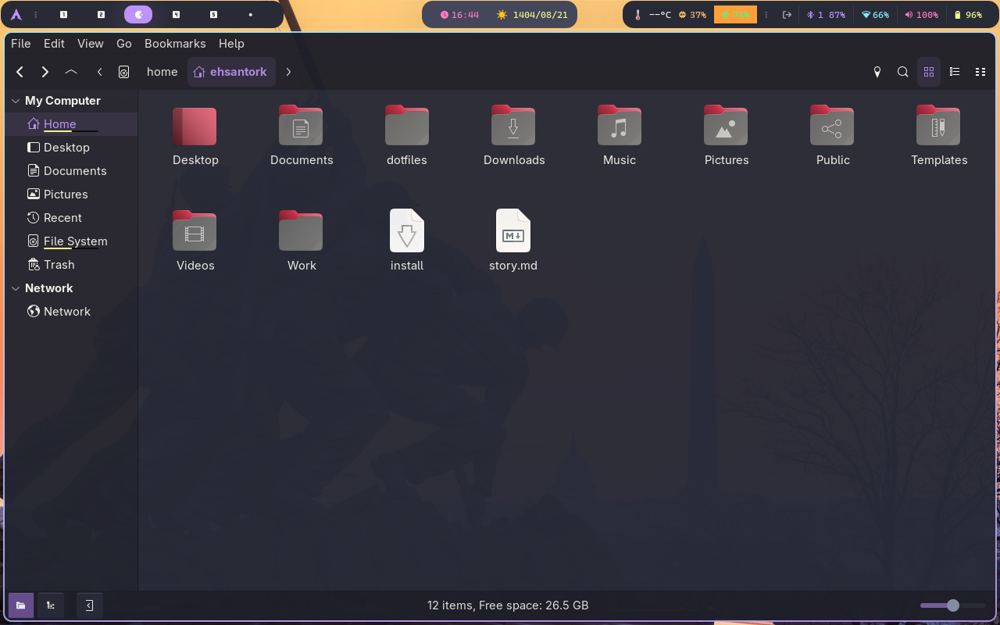
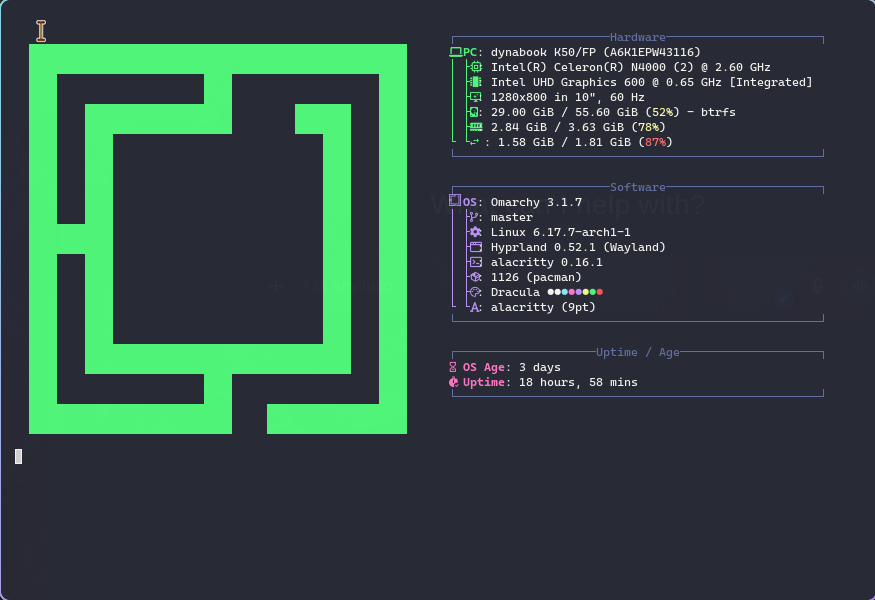

4 Days with Dynabook D45 – Omarchy 3.1.7 + Falkon Review

Quick Notes & Why This Test Exists
My Dynabook D45 (model K50/FP) has been hibernating since 2022. It is a 10-inch detachable with a
Intel Celeron N4000, 4 GB LPDDR4, and a modest eMMC that I replaced with a SATA SSD.
Instead of retiring it, I wanted a portable Omarchy jumpbox for browser debugging and lightweight Qt hacking.
Four days in, it now feels more responsive than some newer Celeron Chromebooks.
- Distribution: Omarchy 3.1.7 (Arch-based, with Hyprland 0.52.1 + Wayland).
- Kernel: 6.7.7-arch1-1, Zen tweaks enabled,
intel_pstatein passive mode. - Desktop: Hyprland with Gestures, Waybar, and a Dracula-tinted theme.
- Browser: Falkon daily, Chromium fallback, Zen Browser on ThinkPad for comparison.
- Memory Guard: EarlyOOM + zram-generator (2.8 GB compressed swap) keeps the UI fluid.
Dynabook’s magnesium & fanless chassis stays under 42 °C after hours of browsing and VS Code. The key is keeping RAM churn predictable, not trying to turn it into an Alder Lake clone.
Hardware & Base Setup
Here is the baseline hardware after upgrades and firmware flashes. The BIOS is the latest Japanese release (2023-08), secure boot disabled, VT-x on, and fan curves locked to “Quiet” so the tablet stays genuinely silent.
| Component | Details | Notes After 4 Days |
|---|---|---|
| CPU | Intel Celeron N4000 (2C/2T, 6W TDP) | 390 single / 610 multi in Geekbench 6. Under-volted by -45 mV via intel-undervolt. |
| RAM | 4 GB LPDDR4 soldered | Idle: 1.6 GB, Dev workload: 3.4 GB. EarlyOOM kills background Falkon tabs first. |
| Storage | 500 GB SATA SSD (Crucial MX500) | Btrfs with compression=zstd:3 and 4 subvolumes (root, home, pkg, logs). |
| Display | 1280x800 IPS touch @ 60 Hz | Touch works in Hyprland. Palm rejection still meh; gestures mapped to 3-finger swipes. |
| Battery | 36 Wh | 4h 10m mixed (Falkon + VS Code + SSH). Hyprland dimming saves ~0.6 W. |
Omarchy’s kernel already ships with intel-lpss modules, so suspend/resume works out of the box.
I only had to add i2c_hid to mkinitcpio.conf HOOKS to prevent the touch digitizer from vanishing after resume.
Install & Post-Install Checklist
I used Ventoy on a ThinkPad to flash the latest Omarchy ISO. The entire setup, from wiping partitions to first boot, took 25 minutes.
- Wiped the SSD with
sgdisk --zap-all /dev/sdathen created 512 MB EFI + 80 GB root + remaining home. - Mounted as Btrfs, created subvolumes, and enabled transparent compression.
- Installed base packages + Hyprland profile and the “Laptop (Lite)” Omarchy meta package.
- Enabled
systemd-bootwith unified kernel images so updates stay atomic. - Post install script installs EarlyOOM, tlp, powertop, falkon, chromium, nemo, zsh, zed, VS Code, Kate.
I keep a reproducible config (below) so the Dynabook can be re-flashed in under 15 minutes if I mess up dotfiles:
cat <<'EOF' > ~/.config/hypr/hyprland.conf
monitor = eDP-1,1280x800@60,0x0,1
exec-once = dbus-update-activation-environment --systemd WAYLAND_DISPLAY
exec-once = waybar &
exec-once = nm-applet --indicator
exec-once = earlyoom -r 60 -m 5 -M 250
input {
kb_layout = us
touchpad {
natural_scroll = true
tap = true
}
}
gestures {
workspace_swipe = true
workspace_swipe_fingers = 3
}
EOFI also replaced Nautilus with Nemo for two reasons: (1) dual-pane view with single keystroke, (2) better SMB discovery when the Dynabook is tethered over USB-C.

Browser + Daily Web Stack
I didn’t expect Falkon to become my daily driver again, but it won on this hardware. Memory accounting is predictable, QtWebEngine is up-to-date (Chromium 122 base), and it renders Wayland-native windows.
- RAM usage: 180 MB with one tab, 520 MB with six heavy docs (GitHub, Figma mirror, JIRA).
- Process model: Each tab is its own QtWebEngine process, exactly like Chrome’s site isolation.
- Video: 720p60 YouTube uses 35–40% GPU, 48% CPU. 1080p30 is playable when laptop is plugged in.
- Extensions: Falkon scripts provide FoxyProxy-style per-tab proxy + uBlock equivalent.
- Chromium: I keep stable chromium for WebRTC-heavy meetings. Widevine works via flatpak extras.
Falkon profiles live under ~/.local/share/falkon/profiles. I sync only the config folder with syncthing so cache stays local.
Network Tweaks
Dynabook’s Wi-Fi card (Intel 3165) hates crowded apartments. I forced the router into DFS channels and disabled power save:
sudo tee /etc/NetworkManager/conf.d/wifi-powersave.conf <<'EOF'
[connection]
wifi.powersave = 2
EOF
sudo systemctl restart NetworkManagerRTT to GitHub dropped from 92 ms to ~38 ms on 5 GHz once the card stopped sleeping mid-transfer.
Developer Workflow Benchmarks
The Dynabook is not replacing my ThinkPad T14 Gen 3, but it is now “good enough” for content edits, small Rust patches, and Qt UI tweaks. Here is what I measured:
| Task | Tooling | Duration / Notes |
|---|---|---|
| Repo sync (15k files) | git over SSH, delta | 4m 12s on 40 Mbps tether, CPU-bound due to delta diffing. |
| Rust fmt + test | rustup stable, mold linker | cargo test --lib runs in 58s, fans never ramp (passive cooling). |
| VS Code + Cursor AI | OSS VS Code, cursor extension, sddm | 1.1 GB RAM usage; still responsive. Copilot fix landed via Cursor plus remote SSH. |
| Kate IDE | Qt/C++ project (42 targets) | 170 MB baseline, debugger + git blame + terminal + outline all open. Feels native. |
| Neovim + LazyVim | tree-sitter, lsp-zero | 120 MB total; perfect for markdown + docs editing on battery. |
My container workflow uses podman with the quadlet generator so services start on login without systemd user units:
mkdir -p ~/.config/containers/systemd
cat <<'EOF' > ~/.config/containers/systemd/devbox.container
[Unit]
Description=Devcontainer for docs build
[Container]
Image=ghcr.io/journalehsan/mdbook:latest
Volume=%h/work:/work
WorkingDir=/work
ContainerUser=1000
AutoUpdate=registry
[Install]
WantedBy=default.target
EOF
systemctl --user enable --now devbox.containerOn this hardware, Podman containers cold-start in 4–5 seconds. mdBook builds for my docs repo finish in ~32 seconds.
Observability & Metrics
I captured the d4 fastfetch screen on day four. RAM + swap usage looks scary, but remember: zram is compressed and EarlyOOM provides a pressure-based kill switch.

Key stats after four days of uptime:
- Boot to Hyprland: 22 s cold, 11 s after warm reboots (systemd-boot + UKI).
- Idle draw: 3.7 W (Wayland dim, Wi-Fi on). VS Code + Falkon pushes it to 6.2 W.
- Swap: 2.8 GB zram + 1.8 GB swapfile on SSD. Average compression ratio: 2.3×.
- Thermals: 37 °C idle, 46 °C sustained compile. Passive heatpipe is enough.
- Filesystem: Btrfs scrub every Sunday takes 9 minutes with negligible UI impact.
I graph memory pressure with Netdata cloud, but locally I rely on hyprctl activewindow -j + a custom Waybar module to show top offenders. Snippet:
{
"custom/memwatch": {
"format": "{}",
"exec": "ps -eo pmem,comm --sort=-pmem | head -n 2 | tail -n 1",
"interval": 15,
"return-type": "json"
}
}Issues, Workarounds & Remaining Gaps
What I fixed
- Touchscreen resume bug: add
i2c_hidto initramfs +udevadm triggeron resume via/lib/systemd/system-sleephook. - Waybar battery flicker: explicit
BAT0path in the Waybar config; Omarchy default looked for BAT1. - NFC reader spam: blacklisted
pn533_usbto avoid useless interrupts. - Falkon keyring prompt: switched to KWallet via
qt5-webengineflags so credentials sync silently.
Still rough
- External 4K monitor: MST hub works but Hyprland mirrors at 30 Hz. Need to test
wlr-randrscripting. - Pen digitizer: works only as a single button mouse; no pressure curve exposed.
- Zoom on Wayland: Electron apps still behave better on XWayland, so I keep Chromium around.
Verdict After Four Days
Reviving the Dynabook D45 reminded me that architecture-aware choices beat raw specs. Omarchy’s curation (Hyprland, zram, EarlyOOM, mold, pipewire) plus Falkon’s low overhead makes this tablet a totally usable field machine.
- If you need a quiet note-taking / coding companion, this setup is excellent.
- It is not for heavy Docker builds, but podman quadlets + mdBook / MkDocs tasks are fine.
- The biggest win is predictable RAM behavior; no more random freezes thanks to EarlyOOM + zram.
Next steps: test an Intel AX210 Wi-Fi card and see if Hyprland gestures feel better with the latest libinput. For now, the Dynabook is officially back in rotation—proving that good power delivery + tuned software > raw benchmark flexes.